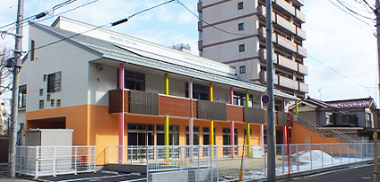

仙台市の条件の良いおすすめ求人！
月給24.6万円〜 / 各種手当充実
賞与年3回 計4.5ヶ月分 / 年休120日
残業月1h程度 / ICTシステム導入
応募前提でなく比較・相談だけでもOKです
LINEでかんたん無料相談する
＼
おすすめポイントや詳細をLINEでご紹介！
／
LINEで園名＆詳しい住所をすぐ確認できる
最新の募集状況や園のリアルな内情をお伝え
ご希望に近い他の求人もLINEでご紹介可能
[おすすめポイント]
Point 1
年間休日120日！残業も月平均1時間でプライベート充実
Point 2
ICTシステム導入＆パート職員配置で業務負担をしっかり軽減
Point 3
賞与年3回・計4.5ヶ月分！住宅手当や退職金など福利厚生も充実
Point 4
未経験・ブランクOK！無料駐車場完備でマイカー通勤も快適
[求人票]
園名
お問い合わせ後にご案内
（掲載枠により非公開となります）
勤務地
宮城県仙台市
月給
24.6万円〜30.6万円
賞与
年3回 計4.5ヶ月分
休日
年間休日 120日
＼ まずは比較用だけでもお気軽にご相談ください！ ／
LINEで園名・詳細を確認する